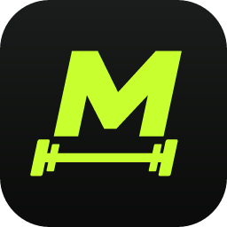

My Gym My WaySupport
Need help? Email preston5@protonmail.com. I usually reply within a few days. The answers below cover the most common questions.
Is it really free?
Yes. There is no paywall, subscription, trial, in-app purchase or ad. Every feature is available to everyone.
How do I get started?
- The first time you open the app, tick the equipment you own. Bodyweight exercises are always included.
- On the Train tab, tap Generate. Pick a focus, such as full body, upper, lower, push, pull, core or conditioning, and a length.
- Swap any exercise you don't like, or tap Shuffle for a new mix. Tap Save workout to reuse it later.
- Tap Start now, then tick off each exercise as you finish it. When you're done, the session is saved to your history.
Prefer to plan it yourself? On the Train tab, tap Build and add exercises from the library. Group the list by type or by muscle, then tap a group to open it, or search by name or muscle.
How do I change my equipment?
Open the Me tab and tap Edit equipment. The library and the workout generator update straight away.
Why don't I see an exercise in the library?
The library only shows exercises your equipment allows. Add the equipment the exercise needs on the Me tab, and it will appear.
How do the exercise videos work?
Tap any exercise to see a short demonstration video from YouTube, credited to the trainer's channel. Videos need an internet connection. The written form cues under each video work offline. If a video stops working, email me and I'll replace it.
How do guided cardio sessions work?
Open the Cardio tab and pick a session for your equipment. A full-screen timer shows each step, how hard to go on a 1–10 scale, and what comes next. Soft chimes count down the last 3 seconds of each step, and a voice announces the next one. Your music keeps playing and dips under the cues. Turn sounds or the voice off in Me → Feedback, or tap the speaker in the timer to mute it.
How does bootcamp work?
On the Generate screen, set Style to Bootcamp and pick 30, 45 or 60 minutes. A bootcamp is a station workout like a class. The cardio stations come from your equipment: a treadmill, rower, bike, boxing bag or jump rope. With no machine, you do floor cardio instead. The floor station rotates through strength moves, 45 seconds each. On cardio, you repeat a wave of base, push and all-out efforts. Tap Shuffle to change the moves and, if you own more than two machines, the stations. Each bootcamp starts with a warm-up and ends with a cool-down and stretch.
Is there mobility and stretching?
Yes. Open the Recover tab. Mobility sessions loosen you up before training or on any day. Stretch sessions cool you down after training. Both have a 5-minute option. None of them needs equipment. Move smoothly in mobility work, and hold each stretch at a gentle pull, never pain.
Where is the exercise library?
On the Train tab, tap Exercise library. You can browse every move by type or by muscle, and watch its demo video.
How many workouts can I save?
Up to 100. History keeps your newest 500 sessions. That keeps the app's storage small. To save a new workout when the list is full, delete one you no longer use.
Does the timer stop when I leave the app?
On iPhone with iOS 26 or later, turn on Me → Apple Health and timed sessions keep going when you lock your phone or switch apps. The voice and chimes keep playing, and the Lock Screen shows the current step and its countdown. Without it, and on Android, a timed session pauses when you leave it, so you never miss a step you didn't hear. Tap Resume to carry on. In a timed session, tap the X and choose Restart from the beginning. Strength workouts have no timer: they record when you started and when you tapped Finish, and History shows both times and the duration between them.
Does it work with Apple Health?
Yes, on iPhone. Turn on Me → Apple Health. Each finished session is saved to Health as a workout, such as rowing, boxing or strength training, with its start and end time. The app only saves workouts. It never reads your health data. To stop, turn the switch off, or remove access in the Health app.
The voice sounds robotic. Can I change it?
The app uses the best English voice installed on your phone. On iPhone, download an Enhanced or Premium voice such as Ava or Zoe in Settings → Accessibility → Read & Speak → Voices. The app picks it up the next time you open a session.
Can I turn off the animations?
The app follows your phone's Reduce Motion setting. On iPhone, turn it on in Settings → Accessibility → Motion. On Android, turn on Remove animations in Settings → Accessibility.
Does the app track reps and weights?
Yes. During a workout, tap Log a set under an exercise and enter the weight and reps, or seconds for holds. The app shows what you did last time and suggests the next step: one more rep, or 5 lb (2.5 kg) more once every set reaches the top of the range. Open an exercise to see its progress chart and your best.
How do programs work?
On the Train tab, tap 4-week program and choose 2 to 5 days a week. The app builds the workouts from your equipment and repeats them each week, so you can add weight or reps over time. Week 4 is lighter, with one set fewer. Each week also suggests an optional cardio session. The Train tab shows your next workout, and History shows your streak calendar.
Is there a widget or Siri shortcut?
Yes, on iPhone. Add the Next workout widget from the Home Screen to start your next program workout with one tap. You can also say "Start my next workout in My Gym My Way", or "Start Quiet morning in My Gym My Way" for any guided session.
How is my BMI calculated?
On the Me tab, enter your height and weight in US or metric units. BMI is your weight in kilograms divided by your height in meters squared. The app shows the World Health Organization category for adults:
- Underweight: below 18.5
- Normal weight: 18.5 to 24.9
- Overweight: 25 to 29.9
- Obesity: 30 or higher
BMI is a rough guide for adults. It doesn't account for muscle mass, so people who lift often score higher than their body fat suggests. It doesn't apply to children or during pregnancy, and the WHO suggests lower cut-offs for some Asian populations. It isn't medical advice. A doctor can tell you what's healthy for you.
Where is my data stored?
Everything stays on your phone. The app has no account and sends none of your data anywhere. The exercise videos come from YouTube, which the privacy policy explains. The privacy policy has the details.
How do I delete my data?
- To delete a saved workout, open it from the Train tab and tap Delete.
- To delete a past session, open it from the History tab and tap Delete from history.
- To delete everything, delete the app.
Is this safe for me?
The app gives general fitness information for adults. Talk to a doctor before you start a new exercise program, especially if you have a health condition, an injury or are pregnant. Use weights you can control with good form, and use the safety arms on your rack when you lift alone. Stop if you feel chest pain or pressure, dizziness, or shortness of breath that's unusual for you.